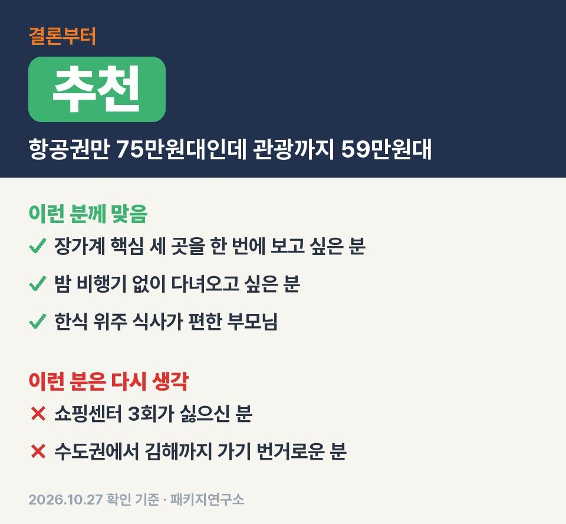
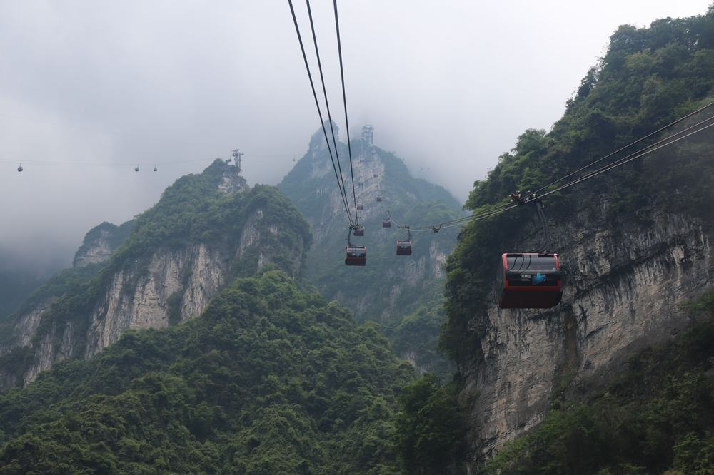
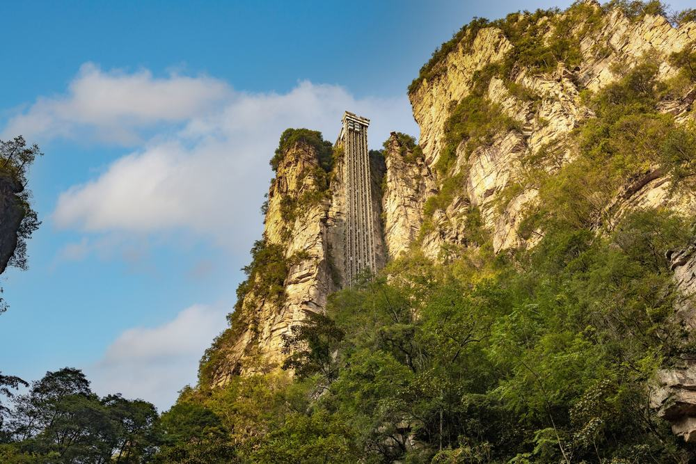
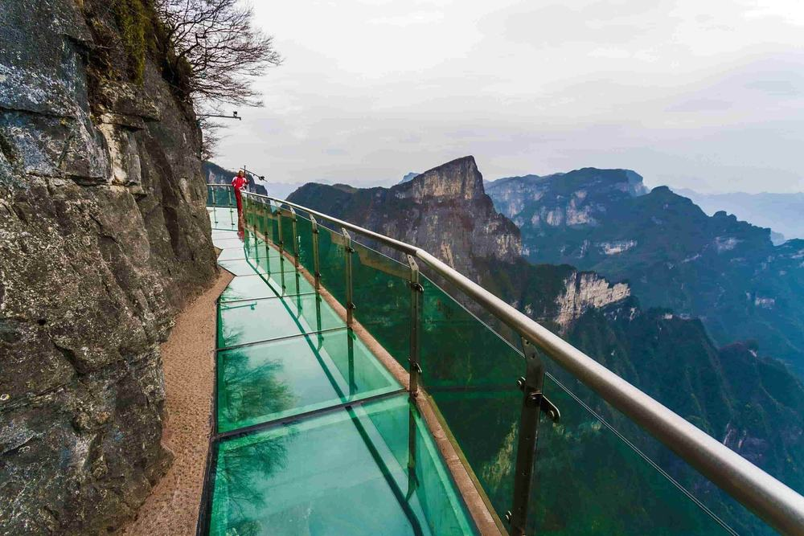
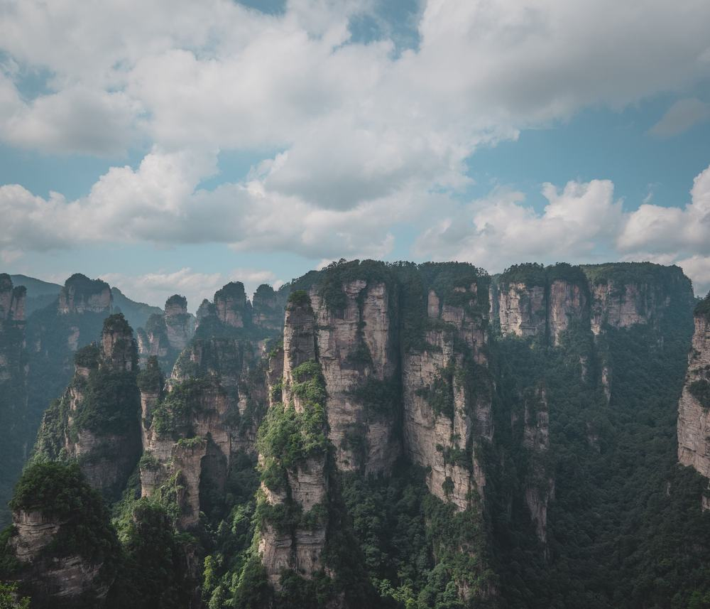

부모님 장가계 보내드리려고 패키지 찾다가 59만원대 하나가 눈에 걸려서 일정표를 끝까지 읽어 봤음.
직접 다녀온 후기가 아니라 하나투어 일정표랑 포함·불포함 원문을 줄 단위로 따져 본 글이라 그 점은 감안하고 보시면 됨.
결론 — 추천. 50만원대에 천문산·원가계·천자산이 다 들어 있고 황룡동굴·발마사지까지 붙어 있음. 다만 쇼핑센터 세 번이 싫으신 분은 맞지 않음.

오늘 기준 출발일별 요금 보기
https://package-researcher.github.io/r/dyg_hanatour_20261213-t.html
| 항목 | 내용 |
|---|---|
| 가격 | 1인 599,900원 (성인 · 12월 출발 기준) · 2인 1,199,800원 |
| 여행사 | 하나투어 |
| 항공 | 에어부산 직항 · 김해 09:30 → 장가계 12:10 / 장가계 13:10 → 김해 17:00 |
| 숙소 | 데이즈 호텔 장자제 3박(준5성급) · 같은 호텔 |
| 일정 | 3박 4일 · 버스 · 한국어 가이드 · 쇼핑센터 3회 · 선택관광 있음 · 가이드·기사 경비 1인 $40 별도 · 최소 6명 |
▶ 내 출발일 오늘 기준 요금 확인 (제휴 링크 · 예약 시 수수료를 받으며 가격은 같습니다)
▶ 10월 27일 기준 장가계 패키지 최저 59만 9,900원부터 — 출발일별 값 한 화면에: 비교 페이지
| 번호 | 내용 | 한 줄 답 |
|---|---|---|
| 1 | 이 값에 들어 있는 것 | 케이블카 2·공연·동굴 |
| 2 | 현장에서 더 낼 돈 | 2인 약 11만원 |
| 3 | 일정과 체력 | 1·2일차가 김 |
| 4 | 자유여행으로 짜면 | 1인 약 130만원 |
| 5 | 맞는 분 · 안 맞는 분 | 쇼핑 괜찮은 분 |
[VIDEO: output/dyg_hanatour_20261213/shorts/must5.mp4 | 장가계 3박 4일 이 값에 든 것 1분 영상 | 출처: Dark Green · Atabek Alimov (YouTube CC BY)]

솔직히 처음엔 59만원이면 천문산만 넣고 나머지는 다 선택관광이겠지 싶었음.
근데 포함 목록을 세어 보니 생각보다 많이 들어 있음.
- 에어부산 김해–장가계 직항 왕복, 유류할증료·공항세까지
- 데이즈 호텔 장자제 3박(준5성급), 조식 3번
- 점심·저녁 6번은 한식 위주. 누룽지 닭백숙, 산채비빔밥, 무제한 삼겹살, 쌈밥 정식, 동태 매운탕
관광 쪽이 이 상품의 핵심임.
- 천문산 케이블카, 천문산사, 귀곡잔도, 유리잔도(서쪽·동쪽 코스 둘 다)
- 원가계 미혼대·천하제일교, 백룡 엘리베이터 편도
- 천자산 하룡공원·서해·어필봉·선녀산화, 천자산 케이블카 편도, 금편계곡
- 매력상서쇼 VIP석 + 무릉원 야경투어, 황룡동굴, 보봉호수, 발마사지, 사석화 전시관
매력상서쇼·황룡동굴·발마사지는 다른 상품에선 선택관광으로 따로 내는 것들인데 여기선 값 안에 있음.
상품 원문 선택관광표 값으로 치면 황룡동굴 $30, 보봉호수 $40, 발마사지 $30이라 이 셋만 해도 100달러어치.

호텔은 세 밤 내내 같은 곳이라 짐을 매일 쌀 일이 없음.
혼자 방을 쓰실 분은 싱글 요금이 원문에 없으니 예약할 때 담당자한테 물어보시면 됨.
| 항목 | 금액 | 비고 |
|---|---|---|
| 가이드·기사 경비 | 80달러 | 1인 $40 × 2명, 현지에서 냄 |
| 선택관광 | 고르는 만큼 | 천문호선쇼 $60 · 대협곡 $100 등, 안 하면 0원 |
| 매너팁 | 고르는 만큼 | 테이블·객실·마사지 팁 자율 |
| 기내식 | 사 먹는 만큼 | 저가 항공이라 유료 |
| 합계 (2인) | 80달러 (약 11만원) | 상품가 2인 1,199,800원 + 가이드 경비 |
두 분이 꼭 더 내는 돈은 가이드 경비 80달러 하나.
선택관광을 안 고르면 두 분 합계는 약 131만원, 한 분에 65만원 남짓으로 끝남.
선택관광을 안 하면 그 시간엔 호텔에서 쉬거나 자유시간이라, 미리 마음을 정해 두면 현장에서 덜 흔들림.
[VIDEO: output/dyg_hanatour_20261213/shorts/card6.mp4 | 장가계 3박 4일 가는 곳 영상으로 보기 | 출처: El Mundo Único (YouTube CC BY)]

| 일차 | 가는 곳 | 버스 | 걷기 | 점심 · 저녁 |
|---|---|---|---|---|
| DAY 1 | 09:30 김해 출발 → 12:10 장가계 → 천문산(케이블카·유리잔도·귀곡잔도·천문산사) → 호텔 | 약 1시간 | 많음 | 닭백숙 · 호텔식 |
| DAY 2 | 원가계(미혼대·천하제일교·백룡 엘리베이터) → 천자산 → 금편계곡 → 매력상서쇼·야경 | 약 2시간 | 많음 | 산채비빔밥 · 무제한 삼겹살 |
| DAY 3 | 일정표엔 식사만 표기 · 포함된 황룡동굴·보봉호수·발마사지와 쇼핑센터 | 약 1.5시간 | 보통 | 쌈밥 정식 · 동태 매운탕 |
| DAY 4 | 사석화 전시관 → 13:10 장가계 출발 → 17:00 김해 | 약 0.7시간 | 적음 | 없음(기내식 유료) |
부모님 체력은 첫날이랑 둘째 날만 보면 됨.
첫날은 비행기에서 내리자마자 천문산으로 가서 잔도를 걷고, 둘째 날은 원가계·천자산 전망대를 계속 오르내림.
계단이랑 인파가 많아서 무릎이 불편하신 분은 가이드한테 미리 말해 두시는 게 좋음.
가 본 사람들 요령을 모아 보면 공통점이 있음. 잔도 바닥이 미끄러울 수 있으니 접지력 좋은 운동화, 정상 바람이 차니까 얇은 겉옷.
천자산은 1년에 200일 넘게 안개나 비가 오는 곳이라 맑은 날을 만나면 운이 좋은 편임.
같은 목적지 다른 여행사 패키지, 쇼핑·선택관광·가이드 경비까지 비교
https://pkg-lab.com/go/?q=%EC%9E%A5%EA%B0%80%EA%B3%84+12%EC%9B%94&utm_source=blog&utm_medium=post&utm_campaign=daily

| 항목 | 금액 | 근거 |
|---|---|---|
| 김해–장가계 왕복 항공 | 754,000원 | PUS↔DYG 직항 왕복 1인 (앞으로 두 달 직항 운임 하위 25% 값 · 2026-10-27 마이리얼트립 조회) |
| 준5성급 호텔 3박 | 120,000원 | 2인 1실 1인분 (추정) |
| 천문산·무릉원 입장 · 케이블카·엘리베이터 | 150,000원 | 1인 (추정) |
| 매력상서쇼 · 황룡동굴 · 보봉호수 · 발마사지 | 100,000원 | 1인 (추정) |
| 식사 (점심 3 · 저녁 3) | 90,000원 | 한식당 기준 (추정) |
| 공항 이동 · 차량 | 70,000원 | 풍경구 간 이동 2인 나눔 (추정) |
| 여행자보험 · 유심 | 15,000원 | 4일 기준 (추정) |
| 가이드 | — | 자유여행은 없음 |
| 합계 | 약 1,299,000원 |
여기가 제일 의외였던 부분.
김해–장가계 직항 항공권만 1인 75만 4천원이라, 항공권 하나가 이 패키지값보다 비쌈.
나머지를 다 더하면 1인 130만원쯤 나오니까 패키지가 70만원 정도 덜 드는 셈.
대신 쇼핑센터 세 번이 끼어 있고 정해진 순서대로 움직여야 함.
장가계는 풍경구끼리 거리가 있어서 직접 가면 매번 차를 따로 잡아야 하는데, 패키지는 전용 버스가 입구까지 데려다줌. 부모님 모시고 가면 이게 은근 큼.
| 맞는 분 | 안 맞는 분 |
|---|---|
| 50만원대에 천문산·원가계·천자산을 한 번에 보고 싶은 분 | 쇼핑센터 3회(각 1시간쯤)가 싫은 분 |
| 밤 비행기 없이 아침에 떠나 저녁에 돌아오고 싶은 분 | 수도권에서 김해까지 가기 번거로운 분 |
| 부산·경남 출발에 한식 위주 식사가 편한 분 | 계단 많은 산 일정이 부담되는 분(가이드에게 미리 말하면 편함) |
쇼핑 세 번만 괜찮으면 50만원대에서 장가계 핵심을 이만큼 넣은 건 흔치 않음.
반대로 쇼핑센터 들르는 것 자체가 싫으시면 이 상품은 고르시면 안 됨. 그런 분은 값이 더 나가도 노쇼핑 상품이 맞음.
Q. 장가계 패키지 가이드 팁은 얼마인가요?
A. 가이드·기사 경비 1인 40달러를 현지에서 냄. 상품가에 안 들어 있음. 매너팁은 자율이라 안 내도 불이익 없다고 적혀 있음.
Q. 장가계 패키지 쇼핑은 몇 번 가나요?
A. 세 번. 침구·라텍스, 동충하초, 진주, 차 같은 매장 중에서 들르고 각 1시간쯤. 구매는 자유고 환불 가능 표기가 있음.
Q. 이 장가계 패키지는 노쇼핑 노옵션인가요?
A. 둘 다 아님. 쇼핑센터 3회가 있고 선택관광 권유도 있음. 대신 매력상서쇼·황룡동굴·발마사지는 이미 포함이라 따로 고를 건 적은 편.
천문산 케이블카부터 원가계, 천자산, 황룡동굴까지 장가계에서 보는 건 거의 다 한 값에 묶인 일정.
쇼핑 세 번이랑 가이드 경비 40달러가 괜찮은 분이면 이 값에선 꽤 잘 들어 있는 편이라고 봄.
출발일마다 값이 달라서 가시려는 날짜 요금부터 확인해 보시면 됨.
오늘 기준 출발일별 요금 보기
https://package-researcher.github.io/r/dyg_hanatour_20261213-e.html
이 글에는 네이버 제휴 링크가 포함되어 있으며, 링크를 통해 예약하시면 일정 수수료를 받습니다. 가격은 동일합니다. 가격과 구성은 2026년 10월 27일 확인 기준이며 출발일에 따라 달라질 수 있습니다.
▶ 이 상품, 영상으로 보기 (유튜브)
▶ 장가계 패키지 오늘 값 나란히 비교
▶ 같은 목적지 다른 여행사 패키지, 쇼핑·선택관광·가이드 경비까지 비교: pkg-lab.com